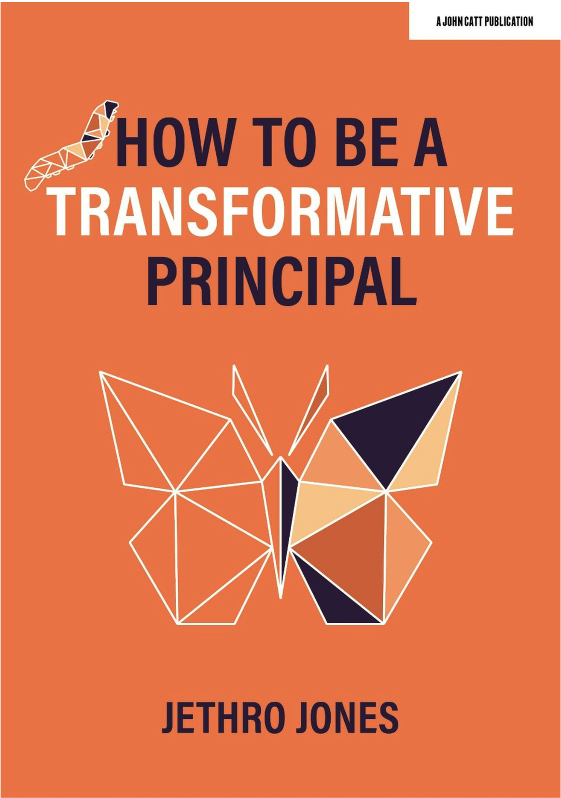
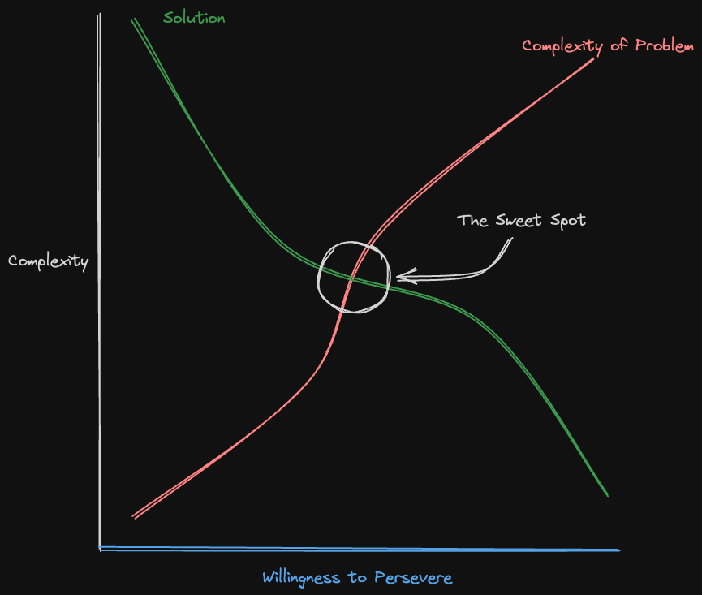
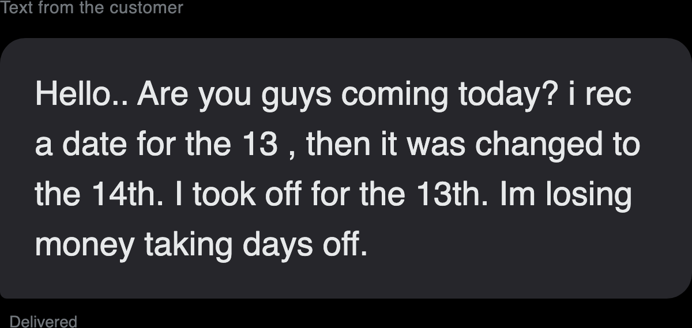
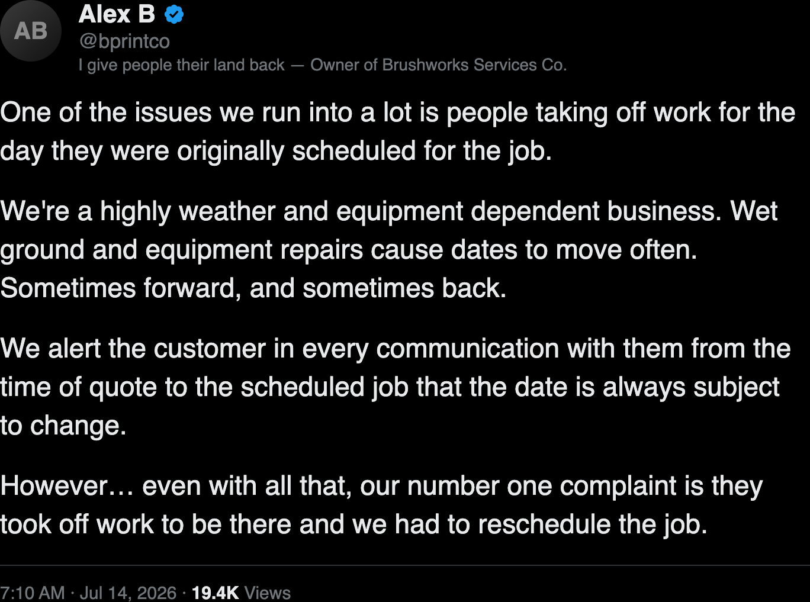
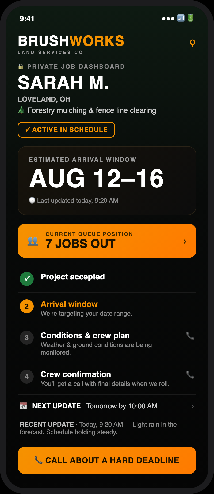
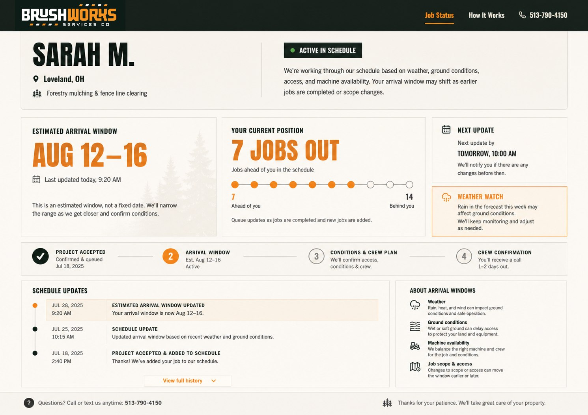
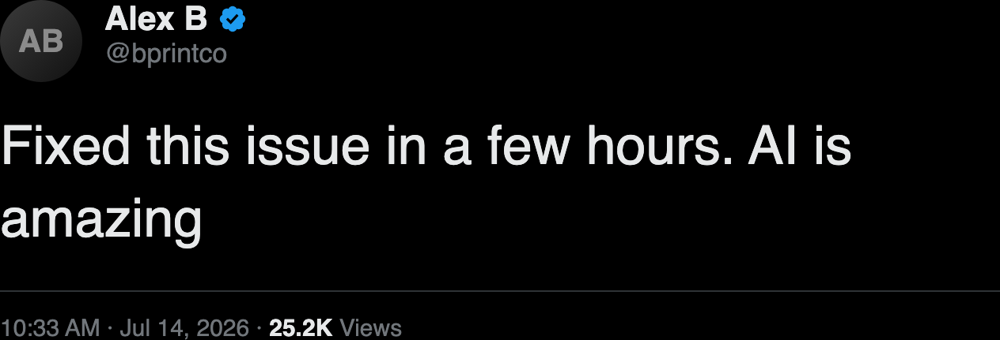

You Can Just Build Things
I’m Jethro Jones.
Award-winning principal · Author · Podcaster · Doctorate in exactly this


Are you This Experienced with AI?
About you: Choose 1
What’s one thing you’ve built or created that nobody cares about?
What side project refuses to leave your brain?
What’s one thing you’re intentionally not using AI for?
What are you hoping to get from this event?
You don’t have to wait for someone else to build it anymore.
Two things are true about AI
It’s a prediction engine.
It can do almost anything — but it’s hard to get it to do something very specific.
/Goal
1. Identify a problem.
2. Find a solution.
3. Build that solution — today.
Most of your time is for building.
First: where do good problems come from?
What do you care about?
“I wish ______ because ______.”
“I wish researchers spent less time on paperwork, because it slows down real progress.”
I wish my customers could know exactly when I will complete their work
But which problem? Not every problem is the right one to grab today.
The Sweet Spot

Pick something small enough to build today, big enough to be proud of.
Let me show you someone who did exactly this — last week.
The problem showed up as an annoyed customer.

The real friction, in his own words.

So he stopped sending reminders — and changed what the customer sees.
He built this. In an afternoon.


“Fixed this issue in a few hours. AI is amazing.”

He started with a real problem.

The repeatable pattern
Find the friction.
Name it plainly.
Describe the outcome you want.
Let AI help you build it.
OptimizationDoc.com/events

ChatGPT — think the problem through, out loud.
A custom GPT — a design-thinking coach in your pocket.
Discovery Canvas
Codex — turn the idea into a working prototype.
Be honest about where AI helped — and where you decided.
Here’s the whole day — 10 to 4.
10:00 — Welcome & why you can build now
10:30 — Find your problem
11:30 — Build (solo or with a team)
12:00 — Working lunch: how to demo what you make
3:00 — Showcase your prototype
4:00 — Wrap